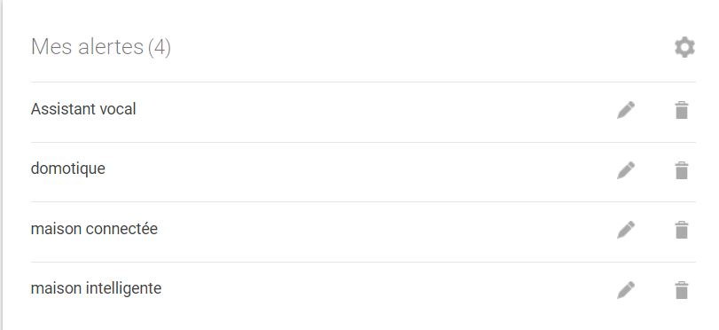

La domotique
La domotique rassemble les différentes techniques qui permettent de contrôler, de programmer et d’automatiser une habitation.
Elle regroupe et utilise ainsi les domaines de l’électronique, de l’informatique, de la télécommunication et des automatismes.
Sa fonction est de programmer, de contrôler et d’automatiser, à distance ou sur place, tous les appareils du domicile intégrés au sein du réseau.
Fonctionnement de la domotique
1. Capteurs et actionneurs
Les systèmes domotiques sont équipés de capteurs qui collectent des données sur l'environnement domestique, comme la température, l'humidité, la luminosité, la présence humaine, etc. Ces capteurs sont connectés à des actionneurs, qui sont des dispositifs capables d'exécuter des actions en fonction des données collectées.
2. Centralisation des données
Les données collectées par les capteurs sont généralement transmises à un dispositif centralisé appelé hub ou contrôleur domotique. Ce hub sert de centre de contrôle pour le système domotique et permet de coordonner les différentes actions des appareils connectés dans la maison. Cela peut être un dispositif dédié, tel qu'une passerelle domotique spécifique ou un ordinateur personnel utilisant un logiciel de domotique.
3. Communication sans fil
Les protocoles de communication sans fil courants utilisés dans la domotique comprennent le Wi-Fi, le Bluetooth, le Zigbee, le Z-Wave, etc. Chaque protocole présente des avantages et des inconvénients en termes de portée, de vitesse de transmission, de consommation d'énergie, etc., et peut être choisi en fonction des besoins spécifiques du système domotique.
4. Automatisation et contrôle
Les utilisateurs peuvent programmer des scénarios d'automatisation pour que les dispositifs domotiques réagissent de manière automatique à certaines conditions. Par exemple, allumer les lumières lorsque quelqu'un entre dans une pièce, régler le thermostat en fonction de la température extérieure, etc.
5. Intégration avec des assistants vocaux et des services cloud
De nombreux systèmes domotiques sont compatibles avec des assistants vocaux comme Amazon Alexa, Google Assistant ou Apple HomeKit, ce qui permet aux utilisateurs de contrôler les appareils par la voix.
Les perpectives d’evolution
les évolutions qu’on voit dans la domotique sont diverses, dans un premier temps nous avons de nombreux entreprises qui se mettent dans le marché en proposant des solutions domotiques plus faciles à installer et utiliser (Alexa,Google home, Amazon echo) qui rendent la domotique plus accessible avec des prix plus compétitifs pour le marché.
Extrait du flux RSS
